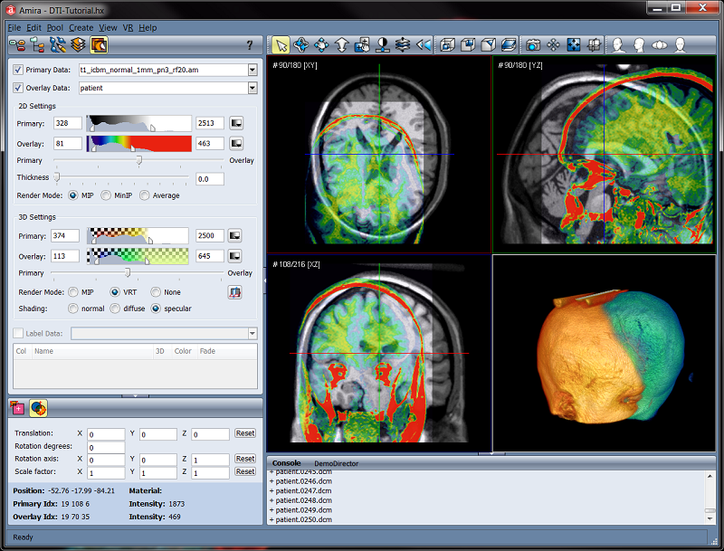

Abstract In brain research it is often required to report the locations
of structures or lesions in terms of a standardized reference frame.
In this tutorial we want to demonstrate the steps involved in registering a
patient's brain to a reference brain. The latter will be a simulated T1 MR
volume from the MNI BrainWeb page, henceforth the Reference, and the former
will be an arbitray MRI scan of a human head, henceforth the Patient. The
result of the procedure is a patient brain that is registered with the reference
and has the same resolution, voxel size and position in space.
Each of the steps in this tutorial can be adapted to a different part of the
body, another modality or species and can be easily applied to a larger number
of studies.
The tutorial will cover the following topics:
- Loading raw and DICOM image data
- Manual and automatic registration in the Multiplanar Viewer
- Using the Segmentation Editor to create a brain mask
- Extracting brains from image volumes (skull stripping) with
Arithmetic
- Reformatting transformed image and label data
Only one data set used in this tutorial is part of the tutorial data found in
data/tutorials/BrainMap. A second data set used as reference has to be downloaded from an
external web page.
- Navigate with your web browser to http://brainweb.bic.mni.mcgill.ca/brainweb/.
Select the Normal Brain Database link, leave the default settings there
and click Download. On the download page request file format "raw
short (12 bit)" and no compression. Save the volume to disk.
- Write down the "MINC volume info" printed on the download page.
- Navigate the Amira file browser to the directory where the
reference brain data set has been saved to. Select
t1_icbm_normal_1mm_pn3_rf20.raws and click Load. Choose Raw
Data from the dialog and enter the parameters from the "MINC volume info":
Data type: short; Dimensions: 181, 217, 181; Endianess: big
endian; Min.coord: -90, -126, -72.

Figure 155:
Raw Data Parameters dialog showing the parameters to be entered to load
the reference data set. With a voxel size of 1 (mm) in each direction and
minimum coordinates of [-90, -126, -72] scaling and position of the reference
are fixed.
- In order to make the settings permanent, save the data set to disk as
AmiraMesh.
- Load the patient data set from data/tutorials/BrainMap/DICOM. To do so,
highlight all slices in the file browser, click Load and finally confirm
the Dicom Loader Dialog by clicking OK.
- Launch the Multiplanar Viewer from the sub-application task
bar.
- Set up the reference image as Primary Data and the patient image as
Secondary Data. In the 2D Settings panel use the gray ramp
colormap for the primary and physics.icol for the secondary data, in the
3D Settings panel use the volrenGlow.am and volrenGreen.col
color maps, respectively. For min/max settings and rendering types refer to
Fig. 156.

Figure 156:
Screen shot of the Multiplanar Viewer showing reference and patient
data in image fusion.
The Multiplanar Viewer sub-application is designed to visualize one or
two image volumes at the same time in a set of three MPR (multi planar reformat)
viewers and one 3D volume rendering viewer. Please refer to the
Multiplanar Viewer help page for a detailed description
of the functionality of the viewer.
Here we will use the cross-hair (red, green and blue scout lines) to browse
through the slices. Use the Primary/Overlay slider to blend the display
from the reference to the patient image. Doing so, you will note that the
patient data needs to be rotated from a prone to a supine orientation. This, and
a rough alignment, will be done using the manual registration tool of the
Multiplanar Viewer.

Figure 158:
Manually registered patient data shown in the Multiplanar Viewer
In general, manual registration is subjective and tedious. Thus we would like to
use the automatic registration tool of the Multiplanar Viewer. However,
since automatic registration uses all intensity information in an image the
result of the automatic registration might be biased by non-brain tissue such as
skull, fat and skin. Therefore it is favorable to mask out non-brain regions in
each image. In the next section we will extract the brain from both the reference
and the patient image. This will provide us with two new data sets that we can
use during automatic registration.
The following steps demonstrate an interactive method for quickly obtaining the
brain mask. Users with a valid Neuro Option license may want to perform this
automatically using module SegmentBrain. They can skip
this section and proceed with section 15.2.4.1.
The mask need not be absolutely correct in that it follows all gyri and sulci of
the brain surface. Rather, the mask should provide a rough separation of brain
and non-brain tissue.
The following steps show how to obtain the brain mask automatically using module
SegmentBrain. Users without a valid Neuro Option
license are referred to the preceding section.
- Clear workspace by calling Pool/Remove All Objects.
- Load the saved copy of the reference data (voxel size and position are assumed
to be correct. See section 15.2.2)
- Right-click the green data icon in the Pool and select from
Compute→SegmentBrain.
- In the Properties of SegmentBrain set Smoothing to 20. Click Apply.
- Repeat the above steps for the patient data set that you can load from
data/tutorials/BrainMap/DICOM.
As result you will have two additional data objects with the suffix *.BrainLabels in
the Object Pool.
- Attach Compute→Arithmetic to the reference data set icon.
Connect the InputB connection port with the *.BrainLabels object.
- In the Expr.: field of Arithmetic enter $$A * (B>0)$$
and click Apply. Attach an OrthoSlice to the Result object.
The display should look similar to Fig. 160.
- Save Result as t1_icbm_normal_1mm_pn3_rf20-BrainOnly.am.
- Repeat the above procedure with the patient data set and save the result
object to Patient-BrainOnly.am.
Figure 160:
Central axial slice of the skull stripped refrence data set
The Align centers and Align principal axes buttons can be used
to pre-align images prior to the affine registration. Pre-alignment is crucial
to a successful registration. Most failure to get a reasonable co-registration
are due to a bad pre-alignment. If pre-alignment fails (e.g. the principal axis
alignment selects the wrong axis) use the manual registration tool as described
in Section 15.2.3.
- In addition to the Rigid check box also enable the Iso, and
Aniso scale options of the registration tool. Leave the Monitor
box checked to watch the registration tool while it is working.
- Press the Register button and enjoy!
The final step in our small tutorial consists of reformatting the patient data
to match the reference data set in terms of dimensions.
- Switch back to Pool by selecting the Object Pool icon of the
sub-application task bar.
You will note that the label of the Patient-BrainOnly.am data icon is
printed with an italic type face. This indicates that the data is
transformed. Transformations in Amira actually do not alter the dimensions or
voxel values of the data but only affect their display within the scene
(viewer). To apply a given transformation onto the data requires resampling of
the transformed data onto an axis-aligned lattice. In the case of our brain it
is favorable (but not mandatory) to resample the transformed brain onto the
same lattice as that of our reference data set.
- Attach module Compute→ApplyTransform to the patient
brain-only data set.
- Connect the Reference connection port with your reference data set
(click white square of ApplyTransform icon) and select Lanczos in
port Interpolation.
- Click Apply.
The result is a new image volume that matches the reference image in terms of
dimensions as well as position in space.
If you need to report the location of some lesion or interesting structure in
terms of the coordinates of the reference brain you will need to transform and
reformat the label field coordinately. Since the label field was derived from
the patient data set we just need to copy the registration transformation onto
it to get it perfectly co-registered with the patient data set. An
ApplyTransform will then reformat the label field to the reference
coorddinate system.
- Load file data/Patient-VentriclesLabels.am.
This is a label field where the ventricles of the patient data set have been
segmented.
- Open the Transform Editor of the transformed patient data set
and click the Copy button. Close the Transform Editor.
- Open the Transform Editor of the label field. Click the Paste
button. Close the Transform Editor.
- Attach an ApplyTransform module to the label field.
- Connect the Reference connection port of ApplyTransform with
your reference data set.
- Click Apply.
- Attach a Measure→MaterialStatistics module to the result
object and click Apply. A new data object
Patient-VentriclesLabels.MaterialStatistics will be in the Pool.
Press the Show button in the Properties of this object and read out
the coordinates of the ventricles. The numbers in columns CenterX,
CenterY and CenterZ columns should be similar to those shown in
Fig. 162.
Figure 162:
The output of module Material Statistics shows the X,Y,Z
coordinates of material Ventricles


{kind=link}
{kind=link}
{kind=link}
{kind=link}
{kind=link}
{kind=link}